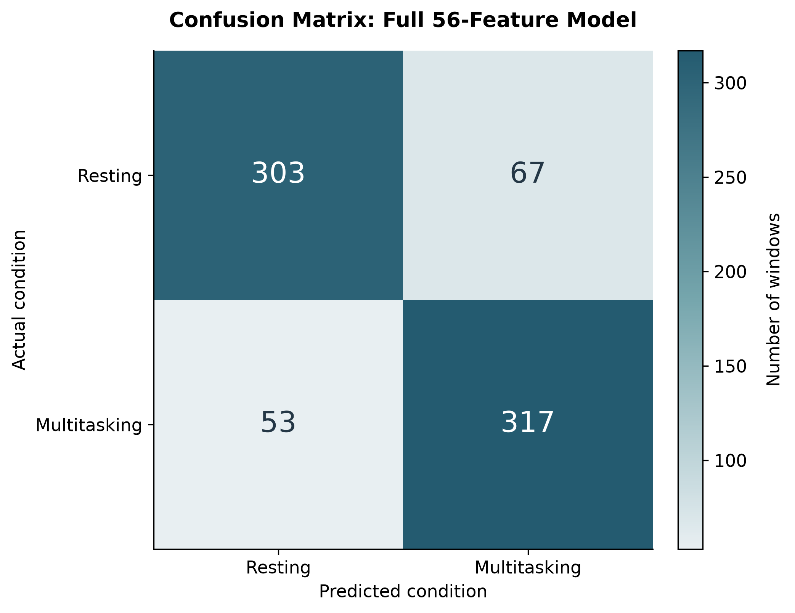
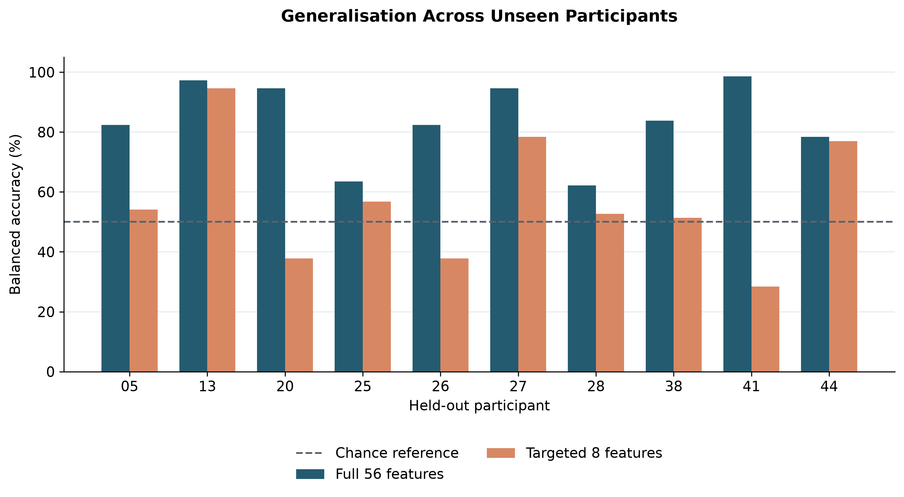
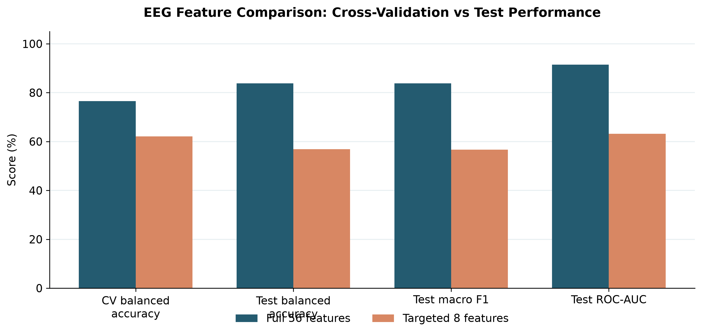

ES 678 · COURSE RESEARCH PROJECT · IIT GANDHINAGAR
Does a Workload Decoder
Survive a New Brain?
Cross-subject generalisation of EEG-based cognitive workload classification
Explore the research ↓INTERACTIVE SIGNAL ILLUSTRATION
A closer look at the EEG signal.
Explore a schematic view of the 14 EEG channels used in this study. Switch between the two recording-condition illustrations.
Resting recording: synthetic traces are drawn smoother and slower.
Illustrative visualisation only. These are synthetic traces, not actual EEG recordings or measured differences between the two conditions.
01 / THE QUESTION
Can a model recognise workload in a person it has never seen?
An EEG classifier can perform well when it is tested on data from familiar participants. But does that performance survive when every recording from a person is kept out of training?
This project investigates that question using resting and multitasking recording conditions from the public STEW EEG dataset. The two conditions are treated as proxies for lower and higher cognitive workload, not as direct measurements of subjective workload.
02 / THE DATA
One dataset. Forty-eight participants.
Each recording was divided into non-overlapping four-second windows. This produced 37 windows per recording, with the final two seconds unused. There were 96 recordings across the two conditions.
03 / EXPERIMENTAL DESIGN
The person—not the window—is the unit of separation.
All windows belonging to a participant were assigned to the same partition. This prevents windows from the same person appearing in both training and test sets.
The split was performed at participant level using a fixed random seed. Hyperparameter selection used five-fold StratifiedGroupKFold cross-validation, grouped by participant, within the training set only.
Feature extraction
Each four-second window was demeaned per channel. Welch power spectral density was estimated, and power was integrated across four frequency bands: delta (1–4 Hz), theta (4–8 Hz), alpha (8–13 Hz), and beta (13–30 Hz). Log-transformed band power yielded 56 features per window.
Models compared
- Majority baseline: predicts the most frequent training class.
- Full model: logistic regression using all 56 channel-band features.
- Targeted model: logistic regression using eight frontal-theta and posterior-alpha features.
Both logistic regression models used standardisation and class weighting. The regularisation parameter C was selected from 0.01, 0.1, 1, and 10 using grouped cross-validation.
04 / RESULTS
The full feature set performed better on unseen participants.
Test balanced accuracy, macro F1 and ROC-AUC are calculated on the ten held-out participants.
Test balanced accuracy
Test ROC-AUC
Model performance
05 / PARTICIPANT-LEVEL ANALYSIS
Performance was not uniform across people.
Each bar represents balanced accuracy for one held-out participant. The difference between the full and targeted feature sets varied substantially across participants.
Balanced accuracy by held-out participant
Participant-level summary
Confidence intervals are percentile intervals from 10,000 participant-level bootstrap resamples. The paired difference is calculated across the ten held-out participants. These estimates are uncertain because the test set contains only ten people.
06 / FIGURES
Visual results



07 / LIMITATIONS
What this experiment does—and does not—show.
- Proxy labels: Resting and multitasking are recording conditions used as workload proxies, not direct subjective workload measurements.
- Small test group: Only ten participants were held out, so generalisation estimates have substantial uncertainty.
- Recording order: Resting recordings preceded multitasking recordings. Condition differences may therefore include order, fatigue, or temporal effects.
- Artifacts: No explicit artifact rejection was applied in the current feature extraction pipeline.
- Feature subset: The targeted eight-feature subset should be interpreted as a comparison, not as a definitive or independently validated biomarker set.
- External validity: Evaluation on this held-out subset does not establish performance on other datasets, devices, or populations.
08 / REPRODUCIBILITY
Code, data and research notes.
The complete analysis pipeline, result tables, figures and interactive research website are available in the project repository.
Dataset
This project uses the public STEW (Simultaneous Task EEG Workload) dataset by Lim, Sourina and Wang (2018).
Lim, W. L., Sourina, O., & Wang, L. (2018). STEW: Simultaneous Task EEG Workload Data Set. IEEE Transactions on Neural Systems and Rehabilitation Engineering, 26(11), 2106–2114. DOI.
Reproducing the analysis
Install the dependencies, download the dataset, and place the
96 recording files inside data/STEW/.
Alternatively, supply your own dataset directory using
--data-dir for the first two scripts.
pip install -r requirements.txt
python scripts/inspect_dataset.py --data-dir "data/STEW"
python scripts/extract_features.py --data-dir "data/STEW"
python scripts/evaluate_models.py
python scripts/participant_analysis.py
python scripts/make_figures.pyAI-use disclosure
ChatGPT and Claude were used as assistance tools during project development, including coding assistance, debugging, website implementation and writing refinement. The author reviewed the code and experimental outputs and takes responsibility for the research design, interpretation and final submission.
The interactive EEG animation uses synthetic illustrative signals, not actual participant recordings or measured condition differences.